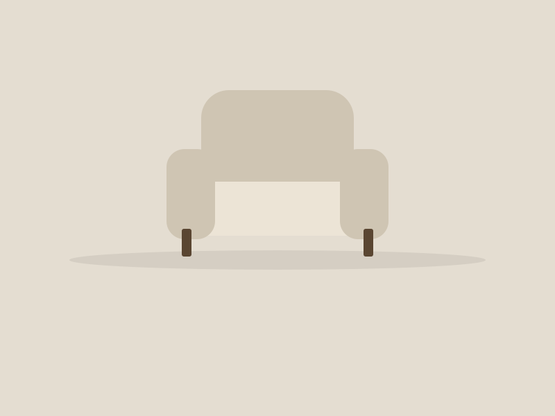

Chair
Runa Bouclé Swivel Chair
€790.00
Item no. NH-2004
A round swivel chair in cream bouclé. Turns 360 degrees on a hidden steel base.
Dimensions
- Width: 82 cm
- Depth: 80 cm
- Height: 72 cm
- Seat height: 42 cm
Material & Construction
- Frame: plywood
- Base: steel swivel plate
- Cushions: high-resilience foam
- Upholstery: polyester bouclé, cream
Features & Feel
- Cosy, enveloping seat
- Nubby bouclé texture
- Smooth 360-degree swivel